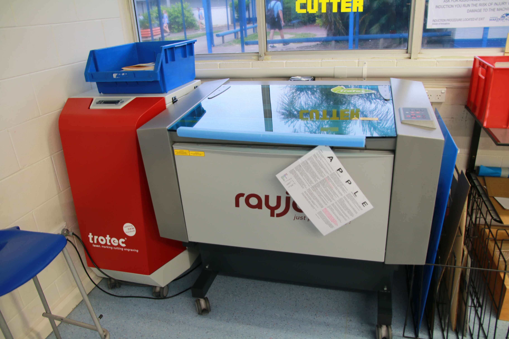
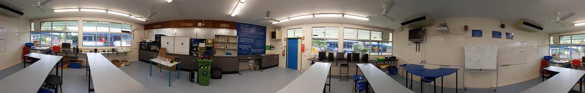
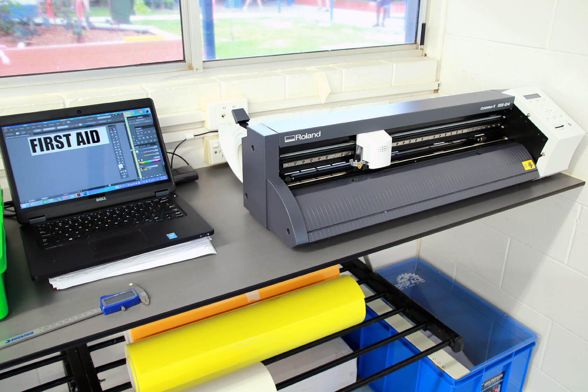
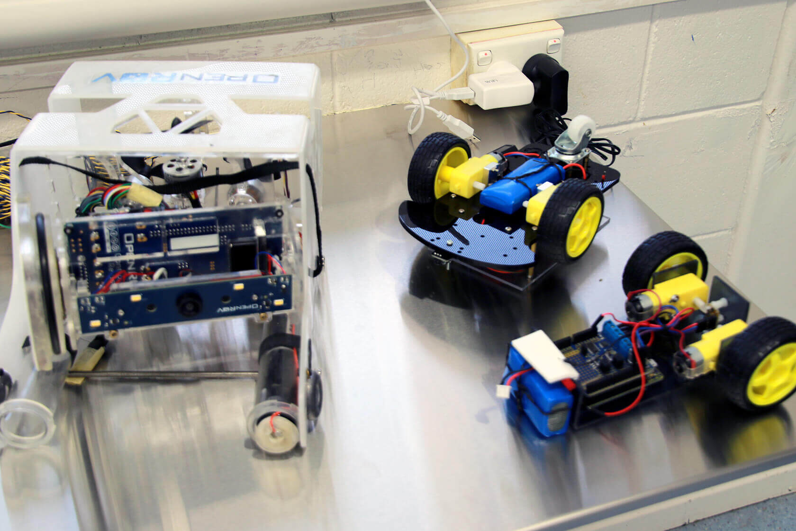
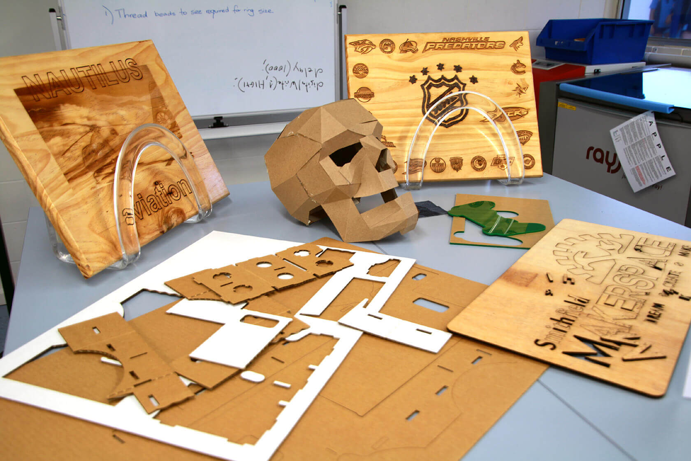
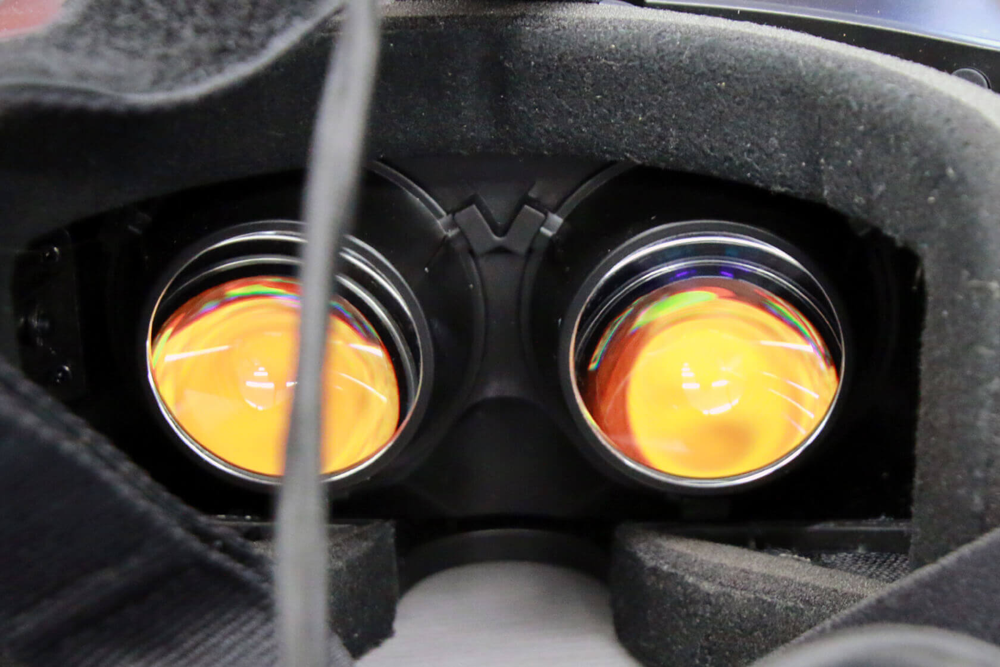
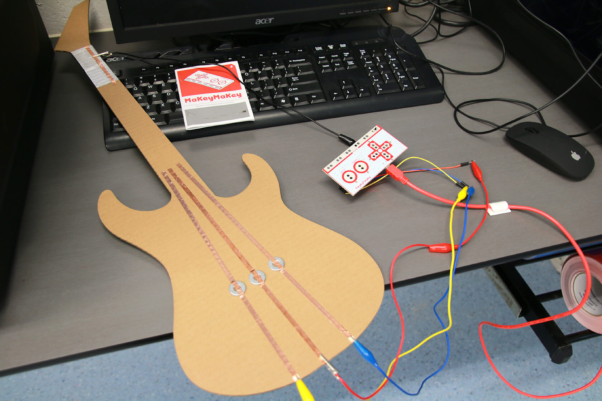

There are many different ways to define a Makerspace but essentially it is; A place where people can come together to use, and learn to use materials as well as develop creative projects. Makerspaces promote learning through play and can be created in a classroom, a library or even in a stand alone building. The important idea is that it is a place that can be used for a range of activities with changing and flexible educational goals and creative purposes.
The drive towards standardized testing and learning outcome achievements mean that the opportunity for play in our classroom is rare, however Makerspaces provide the perfect antidote. Makerspaces are essentially collaborative and creative learning environments. They are not fixed by the materials and tools inside them but a mindset of community, creativity and collaboration. They are in effect centres of active or participatory learning.
Make sure your next stop is Makerspaces in Schools, where you will find more information on the benefits of Makerspaces on multiliteracies, links to professional standards as well as research on play and participatory learning. If you are keen to get started we have some great ideas and activities on our Projects Page where we step you through some popular activities. You can also find additional resources and ideas on our Pinboard on Pinterest.